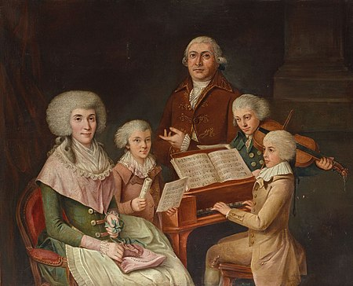
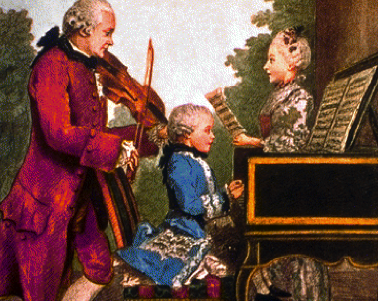

早年的莫扎特和他的姐姐在父母规划下，以“神童”之姿在欧洲巡回展演，为期7年。
莫扎特的首次的巡演开始于1762年在慕尼黑的巴伐利亚选侯宫廷，而后至维也纳及布拉格宫廷；往后莫扎特脚步还遍及曼海姆、巴黎、伦敦与海牙，并取道苏黎世、多瑙埃兴根和慕尼黑回到家乡，这是一场长达三年半、舟车劳顿的展演。在这趟旅程中，莫扎特结识了许多音乐家并熟悉了他们的作品；而对于他未来风格最有影响的，莫过于他于1764及1765年在伦敦见到的约翰·克里斯蒂安·巴赫。8岁的莫扎特便是在其激发下创作了自己的第一首交响曲，尽管大部分可能是由他的父亲所润饰，但这趟旅程相当艰难，除了所用设备简陋，莫扎特一家还得仰赖贵族的邀请与酬金，甚至在客乡遭遇了长期且可能致死的疾病：先是李奥波德于1764年夏季在伦敦患病，1765年秋季的海牙则轮到莫扎特两姐弟。
1767年，11岁的莫扎特便写出第一部歌剧《阿波罗与希亚钦杜斯》（Apollo et Hyacinthus，K.38），并由萨尔茨堡大学附属高级中学的学生们演出这出拉丁喜剧。同年末返回奥地利后，他定期往返维也纳，且于1768年夏天写出另外两部歌剧，名为《牧羊人与牧羊女》（Bastien et Bastienne, K.50）与《善意的谎言》（La finta semplice）；当时莫扎特年仅12岁，隔年便受大主教提名为乐队首席。1768年12月，莫扎特返回萨尔茨堡歇息了一年。
李奥波德为了使儿子能够与近邻的音乐先进区意大利（当时仍为分裂的封侯国）有所接触，特地申请留职停薪的假期，在1769年12月陪着莫扎特前往意大利研习。这趟旅程中，李奥波德也热衷于展示莫扎特的演奏才能与其作曲天赋。而后莫扎特在教宗国博洛尼亚认识了马蒂尼，向他学习对位法。因为杰出的音乐表现，莫扎特破例成为博洛尼亚爱乐学院的会员，该组织大致上只接受20岁以上的成人加入。教宗克勉十四世甚至册封他为金马刺骑士（Cavaliere del lo speron d'oro）。
1770年，莫扎特在米兰写下歌剧《本都王米特里达梯》，演出得到成功，使莫扎特陆续接到更多歌剧委托。后来他与父亲二度返回米兰，为了筹划《阿斯卡尼欧在阿尔巴》（1771年）和《卢乔·西拉》（1772年）的创作及演出。李奥波德希望这些成果能为自己的儿子谋得合适的职位。布赖斯高公爵斐迪南也曾考虑聘用莫扎特，但由于其母亲玛丽亚·特蕾莎女皇不同意而作罢。
1773年3月13日，莫扎特与父亲回到萨尔茨堡，并为当时的亲王大主教科罗尔雷多聘用。莫扎特不仅在家乡有众多朋友与仰慕者，也有机会在各类型作品间探索，包括交响曲、奏鸣曲、弦乐四重奏、弥撒曲、小夜曲及一些小型歌剧。同年莫扎特停留于维也纳时创作了他早期的6首弦乐四重奏（K.168-173），可能是受到海顿作品20-6首弦乐四重奏的激发。1775年4月至12月间，莫扎特对小提琴协奏曲有了兴趣，并着手写了5首小提琴协奏曲（之后他未再创作此曲种），尤以后三首（K.216, K.218, K.219）最受欢迎，展现莫扎特在这类型作品的练达。1776年，他的兴趣转向至钢琴协奏曲，直到隔年初莫扎特共完成了4首钢琴协奏曲（第6号－第9号），被时人评论为是具突破性的作品。
纵使有着不凡的音乐成就，莫扎特愈发对萨尔茨堡的环境不满，并努力在其他地方谋职。可能原因有两个，一来是薪资过低，每年仅有150弗罗林；再者是莫扎特渴望创作歌剧，但萨尔茨堡不怎么提供这种机会，这种状况在1775年宫廷剧院关闭后更为明显，而该地的另一间剧院多保留给外访剧团的演出。此前莫扎特已二度至外地求职，首次是在1773年7月至9月探访维也纳时，后来则是在1774年12月至1775年3月前往慕尼黑，但两次都没有成功；即使其歌剧《假扮园丁的姑娘》在慕尼黑的首演受到欢迎。
《博洛尼亚的莫扎特》由一位无名画家成画于1777年的萨尔茨堡，是博洛尼亚的马蒂尼为他的作曲家肖像画廊而订购的。这幅肖像现存于博洛尼亚市音乐博物馆。关于这幅肖像，列奥波尔德·莫扎特在当年12月22日一封致马蒂尼神父的信中写道：“这件作品艺术创作的价值不怎么吸引人，但以相似度的观点来说我向你保证，它很完美。”
经过一年的准备，1777年8月，莫扎特辞去其萨尔茨堡的职务，9月23日便再次启程前往异地求职。他先到了慕尼黑，又经奥格斯堡辗转至曼海姆，并结识了曼海姆知名乐队的成员，不过他寻觅新工作的前景依旧无望。同样在曼海姆，他疯狂地爱上了音乐名门韦布家的千金，女高音歌手阿罗伊齐亚·韦伯，这引发了他父亲的怒火，他要求他不要忘记了自己的事业。重新振作后，莫扎特于1778年3月14前往巴黎，继续谋求新职务。
从巴黎寄给莫扎特的信件中，其中一封提议了在凡尔赛宫担任管风琴师的职位，但莫扎特对这个想法不感兴趣。在超过半年的失业下，莫扎特开始负债，并变卖了一些贵重物品。而在同年7月3日，莫扎特的母亲病逝。这时莫扎特依附于路易-菲利普一世的秘书梅勒西奥·格林（他曾帮助他七岁时的巡回演出），并居住在他的宅邸。
在莫扎特于巴黎求职时，其父亲也在萨尔茨堡积极帮他找寻工作，且在地方权贵的引荐下，莫扎特得到一个作为宫廷管风琴师兼乐队首席的职位，年薪有450弗罗林；但他却不愿接受。与此同时，莫扎特和格林的关系逐渐变差，最后他选择迁出。在巴黎的时日，莫扎特写下了第8号钢琴奏鸣曲与著名的《巴黎》交响曲，后者于当年6月首演。1778年9月，莫扎特离开巴黎，前往斯特拉斯堡，而后他又逗留于曼海姆及慕尼黑，仍希冀能取得萨尔茨堡以外的新工作，但此时他的经济状况依旧不理想。在慕尼黑，莫扎特再度遇见了阿罗伊齐亚，而这时她已是一名成功的歌手，且已爱上了另一位歌剧演员约瑟夫·朗格。种种的不如意令莫扎特不得不返回家乡，并在1779年1月15日抵达萨尔茨堡，他的父亲先前已说服亲王大主教重新聘用他；虽然接受了新职务，莫扎特对萨尔茨堡的不满却未因此而消减。
1780年11月，他从慕尼黑收到一份创作歌剧的委托，剧名为《依多美尼欧，克里特之王》，在1781年1月29日首演时获得巨大成功。这使得莫扎特在3月被召唤至维也纳；但此时大主教科罗尔雷多也在当地参与神圣罗马帝国皇帝约瑟夫二世的登基典礼。这对科罗尔雷多来说是一举两得，因为他同时能确保莫扎特不会脱离他的掌控。纵然莫扎特得继续服侍科罗尔雷多，他仍构想着更远大的计划，如同他写给其父亲的信中提到的：
“我现在的主要目标是以某些愉快的方式与皇帝见面，我很肯定他会懂我。如果我能为他援笔写下几曲或弹奏一两首赋格，我会非常高兴，因为那正是他爱的。”
莫扎特确实很快就见到皇帝，皇帝后来也以作曲委托和兼职来支持他的事业。
在上述的信件中，莫扎特也提到了他打算以独奏家的身份参与维也纳音乐社所举办的音乐会之演出，这是一系列高收益的展演；但这个想法也是在地方权贵向科罗尔雷多劝说后才得以实现的。
莫扎特长期以来对科罗尔雷多的不满除了因为低薪、公共设施不足，还包括其演出被尽可能的限制在萨尔茨堡内，极不自由。同年5月，莫扎特试图辞职但被拒绝，引发了他与大主教的争执，而且日益严重，因为李奥波德同样反对莫扎特辞职，甚至在多次的书信往来中敦促儿子与大主教和解；莫扎特却依旧坚持自己的立场。6月，莫扎特的辞呈被批准了，但他得到的回复是极具侮辱性的。莫扎特决定前往维也纳发展，成为一名独立的演奏家及作曲家。
莫扎特在短短的35年生活历程里完成了600余部（首）不同体裁与形式的音乐作品，包括歌剧、交响曲、协奏曲、奏鸣曲、四重奏和其他重奏、重唱作品，大量的器乐小品、独奏曲等，几乎涵盖了当时所有的音乐体裁。他的音乐体现了古典主义时期的风格，完善了多种音乐体裁形式，并与海顿一起，确立了维也纳古典乐派。
从莫扎特身上明显地体现出一种一个阶级处于上升时期所具有的坚定、乐观的阶级意识。因此，生活的艰苦、贫困、疾病以及上流社会的冷淡等等均不能使他忧郁、懊丧、屈服、动摇。这就是为什么莫扎特即使处于生活困苦的年月，而他的音乐却仍能保留着光辉灿烂的和明朗活泼的情绪的原因。如在1788年他所写的《降E大调第三十九交响曲》，1791年创作的歌剧《魔笛》《A大调单簧管协奏曲》《A大调单簧管五重奏》都是典型的例证。这种特征实际上贯穿在他的创作中，所不同的只是在早期创作中反映得还不深刻，并且常常与贵族共同的华丽、纤细、偏重娱乐性的特点相结合；而在他晚期创作中所反映的却愈来愈深情、诚挚，愈来愈与启蒙主义者的人道主义思想相结合。
值得注意的是，在他晚期创作中所出现的另一种新的素质——悲剧性、戏剧性的因素。这与他在晚期对封建社会的黑暗与压迫的认识，以及对必须改变现实的问题日渐有更深的体会分不开；他通过这些作品反映了“要取得自由与欢乐必须经历艰难的过程”这样一种理性认识。只是，莫扎特还不能像贝多芬那样把这两种对立的素质很辩证地统一起来，而常常是并列地或相互矛盾地存在于同一作品内，或者存在不同的作品中。
其次，莫扎特和进步的德国知识分子一样，热爱自己的国家与人民。他到维也纳的第二年就接受民族歌剧院的委托创作了《后宫诱逃》，这是一部以歌唱剧为基础的改革歌剧。此后，他在《魔笛》的创作中又作了进一步的发展，吸取了许多德国传统的民歌、新教圣咏，同时也创造性地借鉴了过去正歌剧以及意大利喜歌剧的因素来丰富歌唱剧这种体裁，为德国民族大歌剧体裁的发展奠定了基础。
在莫扎特的创作中，民族意识的增强不仅限于对民间音调的运用和吸取这一方面，还表现于对传统的民族音乐的继承上。特别是在他的晚期创作中，渐渐向约翰·塞巴斯蒂安·巴赫、乔治·弗里德里希·亨德尔、卡尔·菲利普·埃马努埃尔·巴赫、约瑟夫·海顿等人靠近；尤其是在复调手法以及器乐的创作方法上，他甚至走得比海顿还远。在晚期的创作中也表现出对民间体裁的重视，他写了大量的德意志舞曲，乡村舞曲；这在他前期的创作中则很少见到。莫扎特的作品也像海顿一样，常常结合着其他民族的因素，其中特别是意大利和斯拉夫等民族的因素。
最后，莫扎特的音乐语言平易近人，形式结构清晰严谨，而作品所包含的思想感情又比较深广。他巧妙地使这三者取得很好的平衡和结合。这一点固然与他熟悉、爱好民间音乐分不开，但也与他创作思想的民主倾向分不开。他在创作中始终注意到对听众的效果，力求掌握听众的心理。当然，莫扎特时代的音乐听众主要还是贵族阶级及市民阶层而不是广大的劳动群众。但是莫扎特的这种倾向，还是使音乐艺术日渐从封建的束缚下解放出来，日渐面向多数听众，日渐走向具有公开社会意义的市民艺术的具体反映。
|  |  |
莫扎特的父亲是宫廷小提琴师李奥波德·莫扎特（1719年—1787年），母亲为安娜·玛丽亚·波特尔（1720年—1778年）。身为家中第七个小孩，在他姐姐玛利亚·安娜（Maria Anna，昵称南妮儿（Nannerl））1751年出生之前，以及之后至他出生之间的这段时间，分别有3位及2位不幸夭折于年幼。
莫扎特去世后，他与妻子康斯坦泽的小儿子弗朗兹·泽维尔·沃尔夫冈·莫扎特以一个平凡的作曲家身份度过了一生，于1844年去世。他们的大儿子，卡尔·托马斯也曾经在意大利学习过音乐，但后来成为了一名政府雇员，1858年去世时是奥地利政府在米兰的一名会计师，莫扎特家族的直系后代自此断绝。
1760年，父亲开始给予莫扎特最初的音乐教育，其中也包括一般性的文化基础教育。也因此，他4岁时，正在学习钢琴；6岁时更学小提琴。1761年，莫扎特首次作曲。可说是“贝多芬前一代的音乐天才”。
出生受洗时，他的名字是“Joannes Chrysostomus Wolfgangus Theophilus Mozart（约翰内斯·克里斯托斯·沃尔夫冈格斯·特奥菲勒斯·莫扎特）”。“Theophilus”来自希腊文，意为“天主之爱”，这个名字相当于德语的“Gottlieb”、意大利文“Amedeo”以及拉丁文“Amadeus”，但生前却从未有人以此名号称呼他。“Wolfgang Amadeus Mozart”为莫扎特在正式场合用的名字。
李奥波德原籍奥格斯堡（位于今德国），是位小有名气的作曲家与经验丰富的教师。1743年，他被时任萨尔茨堡亲王大主教的李奥波德·安东·冯·菲尔米安任命为其乐队的小提琴手；四年后，他与安娜·玛丽亚结婚。在莫扎特出生的当年，李奥波德出版了《论小提琴演奏准则》并受到欢迎。1763年，他成为该乐队的副乐长。
在莫扎特7岁的姐姐南妮儿开始向父亲学习键盘演奏时，3岁的莫扎特便已展现出他非凡的音乐才能，他不仅具备绝对音准更有超出常人的记忆力，5岁时更请求父亲教大键琴给他学，随后亦涉猎小提琴、管风琴和乐曲创作，至此他的能力一飞冲天，在学会阅读、书写或计算甚至能懂得乐谱视读、巧弄拍律后，时值1762年，6岁的莫扎特已谱出四首小步舞曲（KV.1、2、4、5）和一曲快板（KV.3）。
1762年1月12日，与父亲和姐姐南内尔首次在慕尼黑进行为期三天的旅行演出 ，在选侯宫中演奏 ；9月18日，与父母、姐姐一起去维也纳举行音乐会，受到玛丽亚·特雷西娅女王的接见，并顺访普雷斯堡，在该地做短暂停留。
在莫扎特幼年，他的父亲是他唯一的教师，除了音乐还教导他其他语言及学科。李奥波德对孩子的教育相当投入，而莫扎特的进步每每超越其父亲所授。莫扎特年幼的最初作品和小提琴演奏技巧，展现了他自己的早熟与独创精神，这不但震惊李奥波德，也使得他逐渐放弃作曲，转而积极栽培莫扎特。
莫扎特的音乐常被看作是古典风格的成熟与典范之作。在他开始作曲时，欧洲的音乐风尚被讲求简约、精巧的嘉兰特风格，和其德国化的变体多感风格所支配，这两种风格的形成是对巴洛克豪华、繁复风格的反动；而古典风格仍未发展完全。渐渐地，古典风格在莫扎特的带领下，开始出现类似巴洛克晚期复杂对位的特征，但被新的形式技法缓解及包装，以适应当代的美学观点与社会氛围。
莫扎特是全方位的作曲家，作品的体裁形式涵盖极广，且品质俱佳。莫扎特使用的音乐形式并非新创的，但他在其中注入更加练达的手法与情绪表现；他甚至一手发展并推广了“钢琴协奏曲”之体裁。古典风格的中心概念几乎都表现在莫扎特的音乐里，澄净、平衡与明快是其作品的风格基调，包含了诸如旋律简洁精致、断句清楚及主调明显等特点，而他对动机组合及节奏的超凡运用使其在构想或变化主题时有更大的弹性。在作曲生涯的最后十年，莫扎特更加频繁的使用变化和声（chromatic harmony），《第19号弦乐四重奏》（又名“不协和声”）便是一个很好的例子。终止颤音（cadential trill）的大量使用亦是富有莫扎特个人色彩的一项手法。
莫扎特总是善于吸收和采纳其他音乐的特点，他长年的游历帮助他形成了属于自己的音乐语言。年幼的莫扎特在伦敦深受J.C. 巴赫音乐的影响；旅途中他也接触到曼海姆乐派前卫的表现风格。意大利式序曲和喜歌剧同样对莫扎特后来的音乐结构与风格启发甚多。随着莫扎特的成熟，他逐渐在作品中融入更多巴洛克音乐的技巧，像是对位或复格形式的乐句。
克歇尔目录是当今最普及的莫扎特作品编号系统，通常以缩写"K."或"KV"表示，这是一套编年系统而非分类系统，意即作品是按创作时间排列，而不是按体裁（例如巴赫作品目录）。此目录由路德维希·里特尔·冯·克歇尔于1862年创建，至今已多次再版。
莫扎特自8岁开始写作交响曲，时间长达24年，总数至少超过40首。传统而言，莫扎特有41首具编号的交响曲，但后来的研究发现他其实写有更多交响曲。学者因而给这些新发掘的作品更高的编号，并附上“GA”（Gesamtausgabe，德语的“总产量”），但不全然按年代顺序编排；这种做法仅为方便整理，当中仍有部分作品无法确定是否为莫扎特所作。若再有新发现的作品则直接添至克歇尔目录。莫扎特交响曲的创作期可分段如下：
| 年份 | 详情 |
|---|---|
| 1764年－1771年 | 第1－13号、GA 42－47, 54－56等等。作于莫扎特童年，风格尚未成熟，多有模仿前人的意味。第2号推定为李奥波德所作；第3号推定为阿贝尔所作；第十一号作者未确定。 |
| 1771年－1777年 | 第14－30号、GA 48, 50－52等等。多作于萨尔茨堡，其中最知名的是《第25号》，也是莫扎特唯二的小调交响曲之一。 |
| 1778年－1788年 | 第31－41号。此时风格技法已趋稳定、成熟。其中第37号大部分为米歇尔·海顿所作。莫扎特的交响曲名作几乎都在此区间，包括第31号《巴黎》、第35号《哈夫纳》、第36号《林茨》、第38号《布拉格》、第40号与第41号《朱庇特》。 |
莫扎特也为各种乐器谱写协奏曲，尤其是钢琴，占其协奏曲总数超过一半。莫扎特各类型的协奏曲兹整理如下：
23首钢琴协奏曲（传统上莫扎特的钢琴协奏曲编号至27，但由于前四首仅是改编前人作品而来，故不计入。）
其中第7与第10号分别是为三台与两台钢琴所作。这些作品有大半（11－25号）集中在1782年－1786年完成。当中最知名者为《第21号钢琴协奏曲》，其行板乐章(II. Andante)尤其被广泛运用。
5首小提琴协奏曲。皆创作于1775年，莫扎特时年19岁。这些作品以其优美旋律、情绪张力和小提琴技法之高超而受欢迎，后三首尤为知名。
4首法国号协奏曲。其他木管乐器协奏曲。莫扎特几乎只为每种木管乐器组合写作一首协奏曲，但每首都相当受欢迎，如：《低音管协奏曲》、《双簧管协奏曲》、《长笛与竖琴协奏曲》、《单簧管协奏曲》。
莫扎特创作的室内乐种类多样，大略分类并介绍于下：
36首小提琴奏鸣曲。莫扎特的小提琴奏鸣曲多半是以钢琴为主角，小提琴多是陪衬；他到创作后期才逐渐提升小提琴的地位，使之与钢琴平等对话。前16首作于尚未成熟的1763年－1766年，其余皆作于1778年以后。
23首弦乐四重奏。除了第1号与第20号外，莫扎特倾向在特定时期集中创作弦乐四重奏，并以6首为一单位，从最早的《米兰四重奏》（2－7号）、《维也纳四重奏》（8－13号）、《海顿四重奏》到晚期的《普鲁士四重奏》（21－23号）。
6首弦乐五重奏。除了第1号，其余皆在1787年后完成，故能看出莫扎特对此种形式的谙熟。
6首钢琴三重奏。类似地，后五首皆在1786年后完成。
2首钢琴四重奏。
其他组合的室内乐中，则以《第1号长笛四重奏》、《双簧管四重奏》与《单簧管五重奏》最为知名。
莫扎特早期是以钢琴家的身份而闻名，其钢琴曲很大一部分是为自己的演奏所写。莫扎特的钢琴作品按演奏人数与类型大略区分如下：
18首钢琴奏鸣曲。莫扎特从1774年开始创作钢琴奏鸣曲，这些作品中不乏旋律优美或讲求技艺者。
知名作品有：《第8号钢琴奏鸣曲》、《第11号钢琴奏鸣曲》（第三乐章是为人熟知的土耳其进行曲）、《第16号钢琴奏鸣曲》“简易奏鸣曲”。
16首钢琴变奏曲。其中最知名的是《小星星变奏曲》，共12段变奏。
6首四手联弹的奏鸣曲。
4首幻想曲。
在其他较为杂散的乐曲中仍有名作，如：《双钢琴奏鸣曲》。
随着管弦乐团组织逐渐完善，古典时期发展出更多娱乐贵族或供特殊场合使用的曲种。莫扎特因为职务需要创作了为数可观的其他形式之管弦乐曲，分类如下：
13首小夜曲。以晚期的《第13号小夜曲》最负盛名，将莫扎特优雅明快的风格表露无遗。
21首嬉游曲。其中五首不具编号，包含三首“萨尔茨堡交响曲”与两首在维也纳所作的嬉游曲；第5号为伪作故不计入。最被广泛应用的是《D大调嬉游曲》“第1号萨尔茨堡交响曲”，莫扎特创作时仅16岁；而《F大调嬉游曲》“一个音乐笑话”则是他讽刺古典风格之僵化的诙谐之作。
逾200首的各式舞曲。其中小步舞曲、行列舞曲、阿勒曼德舞曲与进行曲占了大多数，多是莫扎特在萨尔茨堡与后期担任宫廷室内乐作曲家时所作。
莫扎特的宗教音乐主要是声乐的，以弥撒曲及弥撒经文为大宗，包含少量经文歌与赞美诗。莫扎特在其中揉和了葛利果圣歌的元素、严格对位法与歌剧的抒情风格，并始终以稳定的型态呈现。
莫扎特创作的弥撒曲大致分为“庄弥撒”与“短弥撒”两种，在他所处的国度，两者差别仅在演奏时间的长短，仪式所用经文都一样完整。莫扎特早年写有多部弥撒曲，到萨尔茨堡后期后便极少写作，但他最后的几部作品已无疑成为弥撒曲之典范，如《加冕弥撒》（短弥撒）、《c小调大弥撒》（庄弥撒）、《安魂曲》（特殊弥撒）。
以宽松的标准来看，莫扎特共写了22部歌剧，最早的一部作于1767年。这些歌剧的类型及规模不尽相同，所用语言主要是意大利语和德语。莫扎特在长年的的探索中吸收了各种风格，甚至能将不同类型歌剧的特性融会于一。
莫扎特后期的成熟之作，犹如《费加洛婚礼》、《唐·乔万尼》与《魔笛》等等，至今仍是各大剧院必演的经典。
莫扎特、古典主义时期奥地利作曲家，维也纳古典乐派代表人物之一。莫扎特是一位多产的作曲家，作有交响曲、歌剧、钢琴曲及各种乐器的协奏曲、奏鸣曲、室内乐等体裁。莫扎特最重要的音乐贡献体现在歌剧、协奏曲和交响曲上。
歌剧上他继承了格鲁克歌剧改革的思想，但又与格鲁克不同，主张“诗必须服从音乐”，以音乐至上;他的歌剧，具有强烈的音乐感染力，旋律优美、流畅、自然而深情，宣叙调也富有歌唱性。不同类型的音乐，将各种人物形象、性格塑造得鲜明而生动;重唱形式被莫扎特作为安排戏剧性冲突和高潮的重要手段;序曲简练、个性化，在音乐的性质上与全剧有了更多的内在联系。这些重要的探索，使莫扎特在德国歌剧艺术的开拓史上立下了不朽业绩，代表作《魔笛》《唐.璜》《女人心》等。
协奏曲是莫扎特在歌剧以外成就最突出的一方面。他确立了18世纪古典协奏曲的结构范式，确定了第一乐章中“双呈示部”和“华彩段”的形式，并为当时几乎所有的乐器创作了杰出的协奏曲，为近代协奏曲的发展做出了重要贡献，代表作《费加罗的婚礼》《A大调协 奏曲》《d小调协奏曲》 等。
1920年，萨尔茨堡音乐节创立，举办时间为每年的7月至9月初。它的前身是莫扎特音乐节，起初是为了专门演奏莫扎特作品而设立的音乐节，后因一些音乐家的改革和创新，让该节有了新的意义。
1991年，为纪念莫扎特逝世200周年，捷克斯洛伐克、意大利、法国、奥地利、瑞士、德国、波兰以及莫扎特生前生活过的欧洲城市联合在同年9月25日至29日举办“欧洲-莫扎特-布拉格”音乐节 。
1991年，奥地利发行了一套关于莫扎特的金银纪念币。其中金币面值1000先令，正面是莫扎特头像，背面是其歌剧《魔笛》中的情景。 2006年，即莫扎特诞辰250周年之际，德国发行一套3枚面值均为10欧元的纪念银币。其构思巧妙之处，在于五线谱好像是鹰翅扇动所产生。
《费加罗的婚礼》（意大利语：Le nozze di Figaro, 发音：[le ˈnɔttse di ˈfiːɡaro]，作品号K. 492。
是奥地利作曲家沃尔夫冈·阿马德乌斯·莫扎特创作的一部四幕喜歌剧，完成于1786年，意大利语脚本由洛伦佐·达·彭特根据法国戏剧家博马舍的同名喜剧改编而成。
为更多详情，请按此链接: